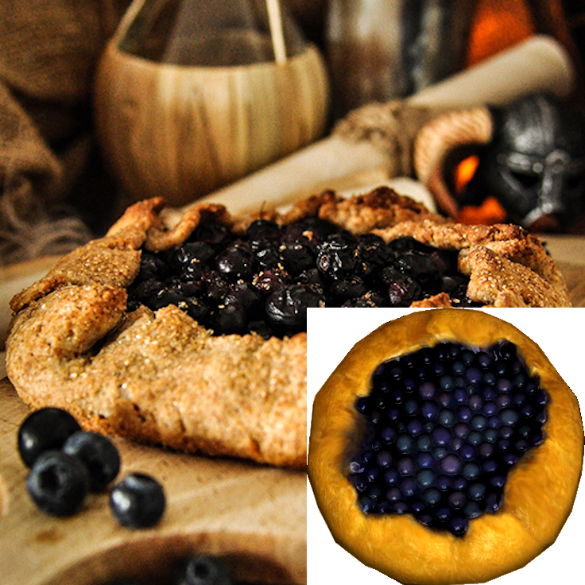

Jazbay Crostata

Description
A delightful dessert made with the elusive Jazbay Grapes. Tangy and sweet with a buttery crust — this crostata is a favorite among alchemists and sweet-toothed Nords alike.
Ingredients
- 1 pie crust (homemade or store-bought)
- 2 cups Jazbay grapes (or red grapes as substitute)
- 1/4 cup sugar
- 1 tablespoon cornstarch
- 1 teaspoon lemon juice
- 1/2 teaspoon vanilla extract
- 1 egg (for egg wash)
Steps
- Preheat your oven to 375°F (190°C).
- In a bowl, combine grapes, sugar, cornstarch, lemon juice, and vanilla.
- Roll out the pie crust onto a baking sheet.
- Spoon the grape mixture into the center, leaving a 2-inch border.
- Fold the edges over the filling, pleating as needed.
- Brush crust with egg wash for a golden finish.
- Bake for 30–35 minutes until crust is golden and filling is bubbly.
Back to Skyrim Recipes